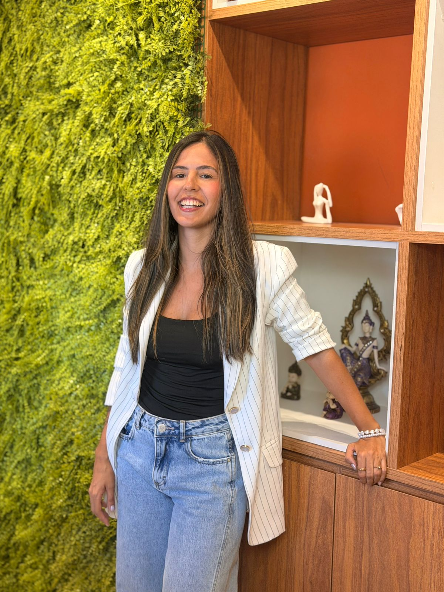

Acredito que o cuidado começa quando alguém encontra um espaço seguro para ser quem é, sem medo de julgamentos. Meu compromisso é oferecer um acompanhamento ético, acolhedor e sensível, respeitando a singularidade da sua história.
Escolhi a Psicologia porque acredito que o cuidado começa quando alguém encontra um espaço seguro para ser quem é, sem medo de julgamentos.
Acredito no poder de uma escuta genuína e no quanto um encontro terapêutico pode favorecer autoconhecimento, autonomia e novas formas de se relacionar consigo mesmo e com o mundo.
Meu trabalho é oferecer um acompanhamento ético, acolhedor e sensível, respeitando a singularidade da história de cada pessoa e o seu próprio tempo. Caminho ao lado dos meus pacientes para compreender os desafios que estão vivendo e construir, juntos, possibilidades de transformação.
Atendo adolescentes e adultos que enfrentam questões como ansiedade, estresse, autoestima, dificuldades nos relacionamentos, conflitos familiares, luto, inseguranças e momentos de transição. Também acompanho brasileiros que vivem no exterior e lidam com os desafios da adaptação, da saudade e da reconstrução de uma vida longe de casa.
Cada pessoa carrega uma história única. Ofereço um espaço de escuta e acolhimento para diferentes demandas emocionais.
Compreender e lidar com pensamentos acelerados e preocupações constantes.
Reencontrar sentido, motivação e conexão com a vida.
Encontrar equilíbrio em meio às demandas do dia a dia.
Fortalecer a relação consigo mesma e reconhecer seu valor.
Construir vínculos mais saudáveis e autênticos.
Descobrir novos caminhos de conexão consigo mesmo.
Aprender a reconhecer e acolher suas emoções.
Acolher a dor da perda e encontrar formas de seguir.
Compreender dinâmicas familiares e encontrar equilíbrio.
Atravessar mudanças com mais segurança e clareza.
Superar desafios de carreira e estudos com confiança.
Apoio na adaptação, saudade e reconstrução longe de casa.
O autoconhecimento não é sobre se transformar em outra pessoa, mas sobre criar um espaço seguro para acolher quem você é em sua plenitude.
Cada sessão é um espaço de acolhimento genuíno, onde você é ouvido com atenção e respeito.
Respeito a singularidade da sua história e o seu próprio tempo de elaboração.
Ambiente seguro e livre de julgamentos, regido pelos mais altos padrões éticos.
Atendimento por videochamada com conforto, segurança e flexibilidade, onde quer que você esteja.
Experiência no acompanhamento de quem vive longe de casa e enfrenta desafios da adaptação.
Abordagem que integra pensamento, sentimento e comportamento para uma compreensão profunda de si.
Um olhar mais próximo sobre o espaço de escuta e dedicação em cada atendimento.

O processo terapêutico é construído de forma cuidadosa, respeitando cada etapa da sua jornada.
Entre em contato para tirar dúvidas e agendar sua primeira sessão.
Definimos o melhor dia e horário para o seu atendimento.
Um encontro de escuta e acolhimento para compreender sua história e suas necessidades.
Juntos, construímos um plano que respeite o seu tempo e os seus objetivos.
Evolução constante, com sessões regulares e atenção à sua jornada de crescimento.
Tudo começa com uma mensagem. Tire suas dúvidas sobre valores, horários e formato de atendimento.
Falar com NatáliaFormação introdutória (AT-101)
Curso de aperfeiçoamento
Aperfeiçoamento contínuo
Curso de formação
A primeira sessão é um momento de acolhimento e escuta. É o espaço para você contar sua história, falar sobre o que está sentindo e o que te trouxe até a terapia. Não existe certo ou errado — é um encontro para que possamos nos conhecer e entender juntos como posso te ajudar.
Cada sessão dura em média 50 minutos, tempo necessário para um atendimento aprofundado e acolhedor.
O atendimento é realizado por videochamada em uma plataforma segura. Você pode participar de qualquer lugar, com a mesma qualidade e sigilo de um atendimento presencial. Basta ter um dispositivo com câmera, microfone e uma conexão estável de internet.
O pagamento é feito por transferência bancária ou Pix, preferencialmente antes da sessão. Os detalhes são combinados diretamente pelo WhatsApp.
Sim, emito recibo que pode ser utilizado para solicitação de reembolso junto ao seu plano de saúde, conforme as condições da sua operadora.
A frequência ideal é semanal, pois garante a continuidade e a profundidade do processo terapêutico. No entanto, isso pode ser ajustado de acordo com a sua necessidade e disponibilidade.
Se você sente que algo está difícil de lidar sozinho(a), se há sofrimento emocional, dificuldades nos relacionamentos, ou se deseja se conhecer melhor, a terapia pode ser um caminho valioso. Não é preciso estar em crise para buscar ajuda — cuidar de si é um ato de coragem e autocuidado.
Se você sente que este pode ser o momento de cuidar de si, será um prazer caminhar ao seu lado nesse processo.